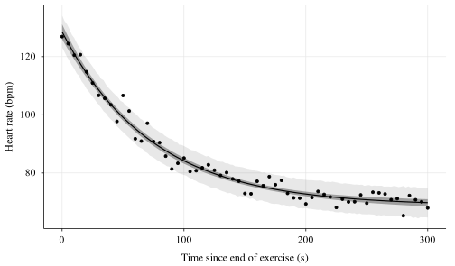

How fast does the heart recover? Metropolis–Hastings from scratch
bayesian
We write a Metropolis sampler in twenty lines of R to estimate the time constant with which heart rate returns to rest after exercise, and carry its uncertainty all the way to a clinical index.
When exercise stops, heart rate does not drop at once: it descends towards rest along a roughly exponential curve. The early part of that descent mostly reflects vagal reactivation [1], and a slow recovery over the first minute is associated with higher mortality [2]. The speed of recovery is therefore a cheap, non-invasive window onto the autonomic control of the heart.
where \mathrm{HR}_\infty is the resting rate, A the amplitude of the descent and \tau the time constant: the number of seconds heart rate takes to cover 63% of the way back. We want to estimate \tau and, above all, to know how much we know about it.
2 Data with a known truth
To be able to check the method we simulate a five-minute recovery, sampled every five seconds, with parameters we know.
set.seed(1930)hr_mean <-function(t, hr_rest, A, tau) hr_rest + A *exp(-t / tau)truth <-c(hr_rest =68, A =62, tau =75, sigma =3)t <-seq(0, 300, by =5)y <-hr_mean(t, 68, 62, 75) +rnorm(length(t), 0, truth[["sigma"]])dat <-data.frame(t, y)ggplot(dat, aes(t, y)) +geom_function(fun = hr_mean, args =list(hr_rest =68, A =62, tau =75),linetype ="dashed", colour ="grey45") +geom_point() +labs(x ="Time since end of exercise (s)", y ="Heart rate (bpm)")
The normalising constant of Equation 2 is a four-dimensional integral that we never need to compute. The Metropolis algorithm [3], [4] builds a Markov chain whose stationary distribution is the posterior using only ratios of densities, in which that constant cancels.
Definition 1 (Random-walk Metropolis) Given the current state \boldsymbol{\phi}:
accept the proposal with probability \alpha = \min\!\bigl\{1,\; p(\boldsymbol{\phi}' \mid y) \,/\, p(\boldsymbol{\phi} \mid y)\bigr\};
if rejected, repeat \boldsymbol{\phi} as the next state.
metropolis <-function(log_post, init, n_iter, step, ...) { d <-length(init) chain <-matrix(NA_real_, n_iter, d) current <- init lp <-log_post(current, ...) accepted <-0Lfor (i inseq_len(n_iter)) { proposal <- current +rnorm(d, 0, step) lp_prop <-log_post(proposal, ...)if (log(runif(1)) < lp_prop - lp) { # accept with probability α current <- proposal lp <- lp_prop accepted <- accepted +1L } chain[i, ] <- current }list(chain = chain, acceptance = accepted / n_iter)}
We launch four chains from dispersed starting points. The step sizes in step were tuned by hand until the acceptance rate fell within the range regarded as efficient: between 0.23, the theoretical optimum in high dimension [5], and 0.44, the optimum for a single parameter.
Before looking at results, the chains deserve some distrust. Fig. 2 shows the first iterations of \tau: all four forget their starting point within a few hundred steps and then mix together.
Fig. 2. Trace plots of \tau over the first 3000 iterations of the four chains (one shade of grey per chain). After a short transient they explore the same region.
We discard the first half of each chain as warm-up and compute the \widehat{R} statistic [6], which compares between-chain and within-chain variance; values close to 1 indicate that all chains describe the same distribution.
posterior <-lapply(chains, function(x) x$chain[(n_iter /2+1):n_iter, ])rhat <-function(lst, j) { m <-sapply(lst, function(x) x[, j]) n <-nrow(m) B <- n *var(colMeans(m)) # between-chain variance W <-mean(apply(m, 2, var)) # within-chain variancesqrt(((n -1) / n * W + B / n) / W)}setNames(round(sapply(1:4, rhat, lst = posterior), 3),c("hr_rest", "log_A", "log_tau", "log_sigma"))
Table II. Posterior summary against the values used to simulate the data.
Truth
Mean
SD
2.5%
97.5%
\mathrm{HR}_\infty (bpm)
68
68.7
0.8
67.1
70.2
A (bpm)
62
59.8
1.2
57.4
62.2
\tau (s)
75
74.0
3.9
66.7
82.0
\sigma (bpm)
3
2.5
0.2
2.1
3.0
The posterior mean of \tau is 74.0 s, with a 95% credible interval from 66.7 to 82.0 s, which contains the true value of 75 s. Fig. 3 shows the whole Bayesian update: a prior that allowed anything from 14 to 261 s ends up, after 61 observations, concentrated in a range of about 15 seconds.
Fig. 3. Prior (dashed) and posterior (solid) of the time constant \tau. The dotted vertical line marks the true value.
A more demanding check is the posterior predictive: simulate new data from the fitted model and see whether they look like the observed ones.
sub <- draws[sample(nrow(draws), 2000), ]tg <-seq(0, 300, by =2)curves <-sapply(tg, function(s) hr_mean(s, sub$hr_rest, sub$A, sub$tau))new_y <- curves +rnorm(length(curves), 0, sub$sigma)band <-function(m) apply(m, 2, quantile, c(0.025, 0.975))pred <-data.frame(t = tg, mean =colMeans(curves),c_lo =band(curves)[1, ], c_hi =band(curves)[2, ],y_lo =band(new_y)[1, ], y_hi =band(new_y)[2, ])ggplot(pred, aes(t)) +geom_ribbon(aes(ymin = y_lo, ymax = y_hi), fill ="grey50", alpha =0.18) +geom_ribbon(aes(ymin = c_lo, ymax = c_hi), fill ="grey20", alpha =0.4) +geom_line(aes(y = mean)) +geom_point(aes(t, y), dat, size =1.1) +labs(x ="Time since end of exercise (s)", y ="Heart rate (bpm)")

Fig. 4. Posterior predictive check. Dark band: 95% interval for the mean curve. Light band: 95% interval for new observations. Points: data.
7 From parameters to the clinical index
The practical advantage of having posterior draws is that the uncertainty of any derived quantity comes for free. The usual clinical index is heart rate recovery at one minute,
That is, 33.3 bpm, with a 95% interval from 30.6 to 36.2 bpm (the true value is 34.1). No delta method or asymptotic approximation was needed.
8 Limits and what comes next
Two honest caveats. The first is statistical: \mathrm{HR}_\infty and \log\tau are strongly correlated in the posterior (\rho = -0.83), because a slower recovery towards a lower resting rate looks very much like a faster one towards a higher resting rate. A random walk with independent steps explores such diagonal ridges poorly; that is why a four-parameter problem needed tens of thousands of iterations. Hamiltonian methods handle this far better.
The second is physiological: Equation 1 assumes independent errors, but real heart rate fluctuates with memory. Neighbouring beats resemble each other. Ignoring this makes the intervals too optimistic. The remedy is to model the noise as a stochastic process with temporal correlation, and the simplest of them all is the Ornstein–Uhlenbeck process.
Cite as Mati (2026). How fast does the heart recover? Metropolis–Hastings from scratch. Drift & Diffusion, 1(10).
K. Imai et al., “Vagally mediated heart rate recovery after exercise is accelerated in athletes but blunted in patients with chronic heart failure,”Journal of the American College of Cardiology, vol. 24, no. 6, pp. 1529–1535, 1994, doi: 10.1016/0735-1097(94)90150-3.
[2]
C. R. Cole, E. H. Blackstone, F. J. Pashkow, C. E. Snader, and M. S. Lauer, “Heart-rate recovery immediately after exercise as a predictor of mortality,”New England Journal of Medicine, vol. 341, no. 18, pp. 1351–1357, 1999, doi: 10.1056/NEJM199910283411804.
[3]
N. Metropolis, A. W. Rosenbluth, M. N. Rosenbluth, A. H. Teller, and E. Teller, “Equation of state calculations by fast computing machines,”The Journal of Chemical Physics, vol. 21, no. 6, pp. 1087–1092, 1953, doi: 10.1063/1.1699114.
[4]
W. K. Hastings, “Monte carlo sampling methods using markov chains and their applications,”Biometrika, vol. 57, no. 1, pp. 97–109, 1970, doi: 10.1093/biomet/57.1.97.
[5]
G. O. Roberts, A. Gelman, and W. R. Gilks, “Weak convergence and optimal scaling of random walk Metropolis algorithms,”The Annals of Applied Probability, vol. 7, no. 1, pp. 110–120, 1997, doi: 10.1214/aoap/1034625254.
[6]
A. Gelman, J. B. Carlin, H. S. Stern, D. B. Dunson, A. Vehtari, and D. B. Rubin, Bayesian data analysis, 3rd ed. Chapman; Hall/CRC, 2013.